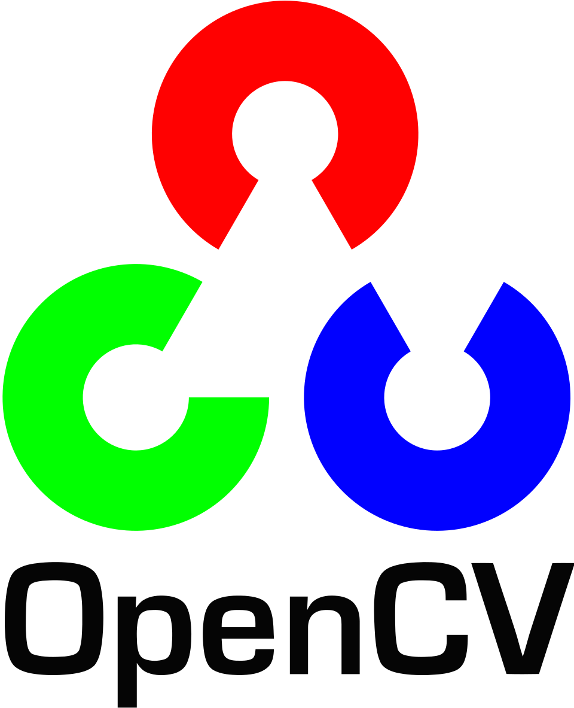
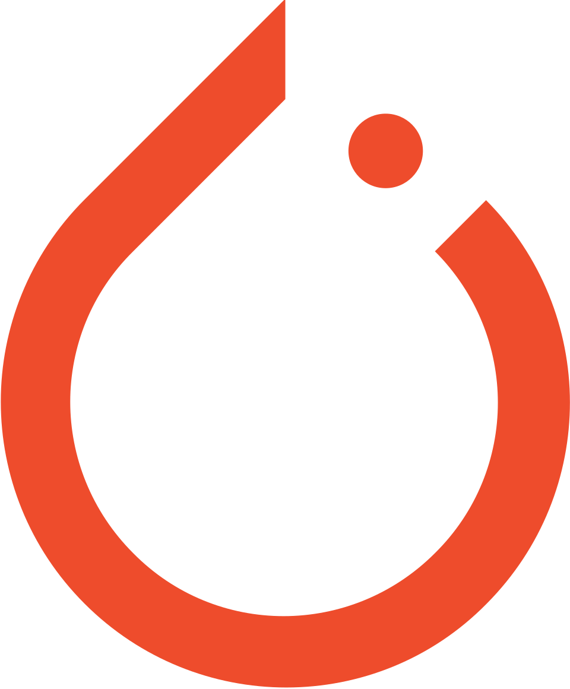

WILLKOMMEN !!!
Here is my work:
Prometheus Plus Grafana Complete Setup for Continuous MonitoringDocker is All You Need
AWS Three Tier Application Deployment with Auto Scaling and Load Balancer
ML Model Deployment — FastAPI and Docker Containerization
AI Research-Driven Blog Writing Agent with Multi-Agent LLM Architecture
Corrective RAG — Retrieval-Augmented Generation with Self-Correction
Graduate Admission Prediction using ANN
Handwritten Digit Classification using ANN
Recurrent Neural Network (RNN)
Bubble Sort in Assembly Language
Cross Tabulation
LSTM | Text Generation using Supervised Learning
Transfer Learning in Keras | Fine Tuning VS Feature Extraction
Transfer Learning in Keras | with Data Augmentation
Customer Churn Prediction using ANN | Keras and Tensorflow | Deep Learning Classification
Softmax Function and Variance in Python
Bidirectional RNN | LSTM | GRU Implementation
GRU | Gated Recurrent Unit Architecture
Why RNNS are Needed? | RNNs VS ANNs
Non-Linear Neural Networks | Keras Functional Model
Back Propagation in CNN
Forward Propagation in Multi-Layer-Perceptron
Multi Layer Perceptron Intuition
Perceptron Issue for Non-Linear Data
Introduction to Machine Learning using Scikit Learn
Data Analysis with Python
Numpy Arrays, Indexing and Operations in Pytho
Filter Function, Dictionaries And Tupple Unpacking in Python
Starter with Python and Jupyter Notebook
NLP | Natural Language Processing and Multiple Ways to Approach it
Remove Deleted or Recently Accessed Files from Linux Mint Search Menu
Shell Scripting | a Complete Guide with an Example
XAMPP Installation in Linux Mint
Linux Configuration for Auto-Mounting Disk
OBS (Open Broadcasting Software) Crash Launching Fix in Linux
PHP Hello World
How to Display Error in PHP
How PHP works?
Linux Configuration for Auto-Mounting Disk
Operators in PHP
Conditional Statements in PHP
All About PHP Functions
All About PHP Arrays
Local and GLobal Variables in PHP
Include File Function in PHP
HTML with PHP
Type Casting in PHP
Setting up React using Vite and a Basic Demonstration
Compound and Complex Sentences
The Computer Hardware and Software
Queue Data Structure Implementation in C Plus Plus
Stack Data Structure Implementation in C Plus Plus
Bubble Sort Algorithm in NASM-16 bit
Adobe Photoshop Basics
Windows Storage Sense
Cloud Computing concept of Load Balancing vs Scalability






© 2023 Muhammad Sharjeel Akhtar. All rights reserved.